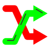
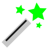

Segmentation#
Semantic image segmentation is the process of pixel-by-pixel classification that results in segments that correspond to the same object. Segmentation is typically used to identify and locate objects in an image and to determine their shape and size.
{kind=link}
Segmented image with synaptic spines shown in green and their parent dendrite in red#
Labelling#
To train a neural network for semantic segmentation it is necessary to create images that are labelled accordingly.
Segmentation tools#
Different tools and functions in MIA exist to label images for semantic segmentation.
To label an image select a tool and draw inside the image to label image objects.
Note
There is no save option as all changes during labelling are saved immediately. Use or ctrl + z to undo the last labelling action.
{kind=link}
All labels are saved in a subfolder inside the currently active folder and have the same file name as the currently selected image, but with .npz as file extension.
Tools#
By selecting the  tool or pressing F1 you can always switch to the drag tool to zoom and change the field of view. Press the Spacebar to toggle between drag tool and the last selected tool.
tool or pressing F1 you can always switch to the drag tool to zoom and change the field of view. Press the Spacebar to toggle between drag tool and the last selected tool.
Use the tool (or press F2) to label objects with freehand labelling. While pressing the left_mouse you can label target objects in the image.
{kind=link}
With the tool (or press F3) to label objects with polygones. Press the left_mouse to add add polygone point. When pressing the right_mouse, the first and the last set polygone points are connected resulting in the finished contour.
{kind=link}
Tip
tool and tool have different options, press the right_mouse to toggle between them:
Add contours are added to the image from the active class. If contours overlap and are from the same class they are combined to a single contour.
Delete removes the created contour from existing contours.
Slice creates a line that is removed from existing contours, can be used to split contours.
The  tool (or press F4) can be used to asssign a new class to an existing contour. Select the target class and press the left_mouse inside an existing contour.
{kind=link}
The tool (or press F5) can be used to correct existing contours. Press and hold the left_mouse to correct existing contours.
{kind=link}
Tip
tool has different options, press the right_mouse to toggle between them and use the mouse_wheel to change the size slider:
Expand allows you to enlarge an existing contour or to create a new contour.
Erase removes parts from existing contours.
Size slider changes the size of the tool.
The tool (or press F6) can be used to remove contours. Press the left_mouse inside a contour to remove that contour.
{kind=link}
By checking Inner contours, contours may have holes. When unchecking Internal contours all holes inside of contours are removed, immediately.
Automated and Semi-Automated Labelling#
Different automated and semi-automated segmentation option are implemented in MIA to speed-up image labelling.
Note
All automated methods only affect the current field of view and ignoring everything outside. For multiple complex objects in a larger image, it can be helpful to focus the field of view on each object individually.
Smart Mode#
The Smart Mode enables an iterative, interactive segmentation mode based on grabcut [1]. Perform smartmode segmentation as follows:
Select a tool (, , ) to roughly label a part of the target structures
If parts are labelled but should not be labelled remove some of those parts that should be unlabelled
If parts are not labelled but should be labelled add some of those parts that should be labelled
Repeat steps 2 and 3
Select another class and repeat steps 1-4 to label objects of a different class
Auto-Segmentation#
The  Auto Seg function performs deep learning based edge detection based on Holistically-nested edge detection [2].
{kind=link}
Tip
Auto-Segmentation is based on edge detection, to get proper labels you might uncheck the Inner Contours property.
Auto-Segmentation works best for isolated object with a clear boundary.
The auto-detected edges might also be used as a prior to further labelling
DEXTR#
DEXTR is deep learning based method that uses the objects extreme points to label the target object [3].
{kind=link}
Press the left_mouse on the 4 extreme points (top, left, right, bottom) of the target object and that object is segmented and assigned the active class. The order of the points is irrelevant.
Training#
For details about neural network training see Training. However, some settings, the network architectures, the loss functions, metrics are specific for segmentation.
Segmentation Settings#
To open the segmenation settings, press:
 Train Model → Segmentation.
Train Model → Segmentation.
{kind=link}
Segmentation training settings#
Checking Separate Contours will weight pixels in the proximity of 2 contours higher, increasing the likelyhood that contours that are close to each other will be separated [4]. Recommended for a dataset with an high density of objects of the same class or with clustered objects. This option might decrease training speed as the pixels weights need to be calculated for each image.
Checking Prefer labelled parts will Discard up to x background tiles in which are less than Minimum required labelled pixels, which can be set in the corresponding fields. For largely unbalanced datasets with a lot of background and fewer objects this option is recommended. For unbalanced datasets see also class weighting in Training Settings.
Neural Network architectures#
Most neural networks for semantic segmentation are based on a Fully Convolutional Network architecture ommiting fully connected layers [5]. During the training process patches of the input images are generated and fed into the network and compared to the corresponding label patch. The size of those patches can be set in Augmentation.
The following Network architectures are currently supported, please refer to the papers for details:
U-Net [4]
Feature Pyramid Network (FPN) [6]
LinkNet [7]
Pyramid Scene Parsing Network (PSPNet) [8]
DeepLabv3+ [9]
The following backbones are currently supported, untrained or with pretrained weights pre-trained on imagenet dataset [10]:
Model |
Options |
Ref. |
DenseNet |
densenet121, densenet169, densenet201 |
|
EfficientNet |
efficientnetb0, efficientnetb1, efficientnetb2, efficientnetb3, efficientnetb4, efficientnetb5, efficientnetb6, efficientnetb7 |
|
Inception |
inceptionv3, inceptionresnetv2 |
|
MobileNet |
mobilenet, mobilenetv2 |
|
ResNet |
resnet18, resnet34, resnet50, resnet101, resnet152 |
|
ResNeXt |
resnext50, resnext101 |
|
SE-ResNet |
seresnet18, seresnet34, seresnet50, seresnet101, seresnet152 |
|
SE-ResNeXt |
seresnext50, seresnext101 |
|
SENet |
senet154 |
|
VGG |
vgg16, vgg19 |
|
Xception |
xception |
Note
Not all model backbones are available for all model architectures.
Tip
The U-Net is a very popular choice for segmentation, it might be a good starting point as network architecture.
Generally the numbers behind the backbone architecture gives either the number of convolutional layers (e.g. resnet18) or the model version (e.g. inceptionv3).
When you have limited computing recources use a small network architecture or a network optimized for efficiency (e.g. mobilenetv2).
From the supported network-backbones the senet154 shows the highest performance on imagenet classification and the slowest processing time.
From the supported network-backbones the mobilenet has the fastest processing time and fewest parameters.
Losses and Metrics#
For semantic segmentation several objective function have been tested for neural network optimization and directly impact the model training.
Metrics are used to measure the performance of the trained model, but are independent of the optimization and the training process.
The loss and metric functions can be set in Train Model → Settings.
Cross Entropy#
The cross entropy loss is a widely used objective function used for classification and segmentation (which is per pixel classification). It is defined as:
with \(p_i\) the true label and \(q_i\) the model prediction for the \(i_{th}\) class.
Focal Loss#
The focal loss is an extension of the cross entropy, which improves performance for unbalanced datasets [20]. It is defined as follows:
with \(\gamma\) as the focussing parameter. Default is set \(\gamma = 2\).
Kullback-Leibler Divergence#
The Kullback-Leibler Divergence, sometimes referred as relative entropy, is defined as follows:
Dice Loss#
The dice loss, which can be used for segmentation of highly imbalanced data [21] and is defined as follows:
Intersection over Union#
The intersection over union is very similar to the dice coefficient and a measure for the overlap of the prediction and the ground truth. It is a widely used measure for segmentation model performance and is defined as follows:
Pixel Accuracy#
The pixel accuracy measures all pixels that are classified correctly:
with \(t_p\) the true positives (\(p_i=1\) and \(q_i=1\)), \(t_n\) the true negatives (\(p_i=0\) and \(q_i=0\)), \(f_p\) the false positives (\(p_i=0\) and \(q_i=1\)) and \(f_n\) the false negatives (\(p_i=1\) and \(q_i=0\)). The pixel accuracy is a misleading measure for imbalanced data.
Tip
A good starting point for choosing a loss function is usually the cross entropy loss. When you have imbalanced data, you can switch to focal loss. Dice loss should be used for special cases only, as gradients (and with that the general training) are more unstable. As metric function the intersection over union is for most cases a valid choice.
Postprocessing#
To open the postprocessing window press  Postprocessing.
Postprocessing.
Postprocessing options for segmentation#
See Tracking for a description of the tracking mode.
The min Contour Size option can be used to dismiss all contours that have a smaller size than the given pixels.
By checking Show Skeleton the skeleton of each contour is calculated. The slider can be used to set contour smoothing before skeleton calculation.
Note
The skeleton is dynamically calculated. To avoid unecessary waiting, turn off skeleton calculation when working with many or complex contours or making changes to contours.
Press the Use as Stack label button to use the currently shown contours for all frames in the currently active stack. Only applicable when using a multi-frame image stack.
Results#
See Results for more information.
To open the result settings for segmentation press Settings in the results window.
Export options for segmentation#
You can select the export options for segmentation. You have the option to export Skeleton size, the Perimeter for each contour, the Min Intensity minimum intensity value inside each contour, the Mean Intensity mean intensity value inside each contour and the Max Intensity maximum intensity value inside each contour.